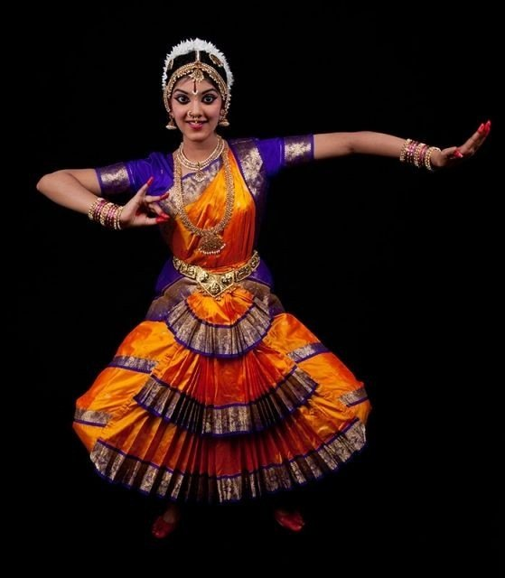
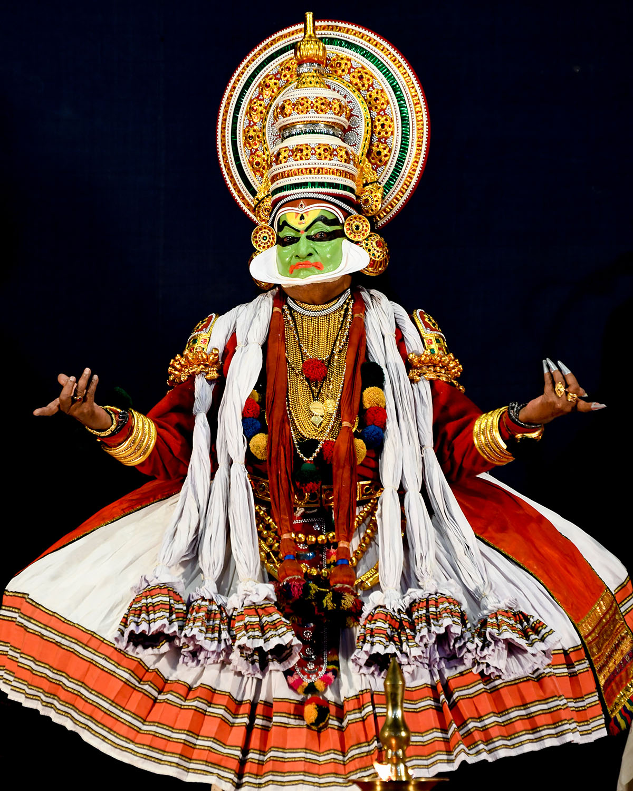

Bharatanatyam
Originated in Tamil Nadu, known for its grace, expressions, and sculpturesque poses.

Kathakali
From Kerala, characterized by colorful makeup, costumes, and storytelling dance drama.

Kathak
Originated in North India, known for spins, intricate footwork, and expressive gestures.